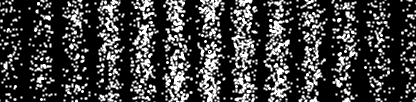
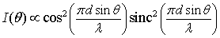

Detection locations over time.
The Double Slit Wave-Particle Duality Model demonstrates how matter and light display both wave- and particle-like properties in single and double slit experiments. The simulation shows a detector screen placed behind an aperture with one or two open slits. Particles (electrons or photons) pass through the experiment one at a time and their impact is recorded on the screen. Although it is at first difficult to discern a pattern, a diffraction (interference) pattern eventually emerges suggesting that each particle is interfering with itself. The particle seems be going through both slits as if it were a wave but is detected (observed) at only one location as if were a particle. The particle is interfering with itself as if it were simultaneously passing through both slits.
Classical wave theory predicts the Fraunhofer diffraction pattern I(θ) if the viewing distance is large compared to the slit width D or slit separation d.

Quantum mechanics interprets I(θ) as the probably of finding the particle (photon or electron) striking the screen. Photons or electrons can each behave like particles or waves, but not at the same time.
The Double Slit Wave-Particle Duality Model was developed by Wolfgang Christian using the Easy Java Simulations (EJS) version 4.3 authoring and modeling tool.
You can examine and modify a compiled EJS model if you run the model (double click on the model's jar file), right-click within a plot, and select "Open EJS Model" from the pop-up menu. You must, of course, have EJS installed on your computer. Information about EJS is available at: <http://www.um.es/fem/Ejs/> and in the OSP ComPADRE collection <http://www.compadre.org/OSP/>.